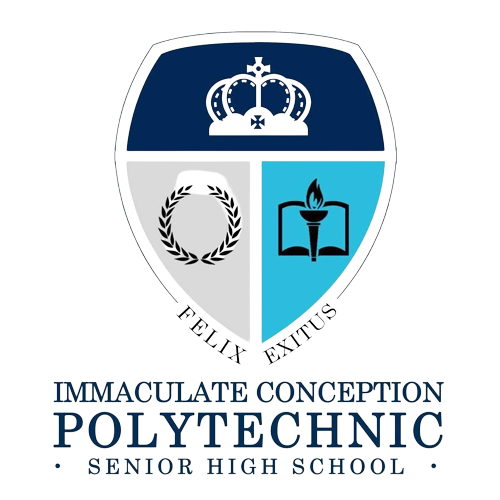
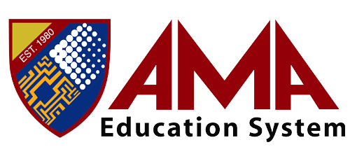

Hello, my name is Ariel D. Vispo and I'm just starting out in Freelancing handling contracted work for multiple clients or companies. I'm eager to learn and grow in this field, and I'm excited to take on new challenges and opportunities to develop my skills. I have a passion for data entry , excel , graphic designer , video/photo editing , social media manager and I believe that Continuous learning and self-improvement are essential for growth and success.. I'm determined to make a positive impact in this field and I'm confident that I have what it takes to succeed. I'm just starting my journey and I have a lot to learn, but I'm ready to put in the work and make the most of every opportunity that comes my way. I'm eager to connect with others in this field and collaborate on new projects.
I'm proud to have attended ICP, where I was part of the K-12 TVL/ICT program. This program offered me a comprehensive education in information and communication technology, providing me with the skills and knowledge I need to succeed in today's digital world. I learned about the latest technologies and techniques in ICT, and had the opportunity to put these into practice through hands-on projects and real-world applications. I also developed critical thinking and problem-solving skills, as well as the ability to work effectively in teams and collaborate with others.
Now im currently a student at AMA Computer Learning Center where I'm studying a Bachelor of Science in Computer Science and I'm gaining a comprehensive understanding of programming, software development, and various other technology-related subjects.I'm confident that my education at AMA Computer Learning Center will open doors for me and help me achieve my career goals. I'm excited to continue my studies and make the most of this opportunity. Thank you for taking the time to learn more about my education and future aspirations.